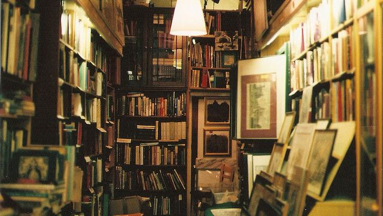

Antikváriumunk 2024 szeptemberében nyílt meg. Hárman vezetjük és folyamatosan frissítjük a használt könyvek és CD-k repertoárját. Sokkal inkább környezetbarát és költséghatékony antikváriumban megvásárolni a termékeket, és ezen a gondolaton kiindulva döntöttünk a Nap antikvárium megnyitása mellett. A weboldalunkon kívül megtalálhatnak a kedves nézelődők Budapesten a Napsugár út 1.-es szám alatt. Szeretettel várjuk a betévedőket hétfőtől péntekig reggel 9 órától 19 óráig.
